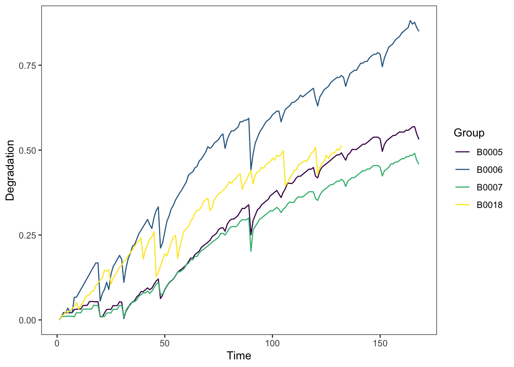
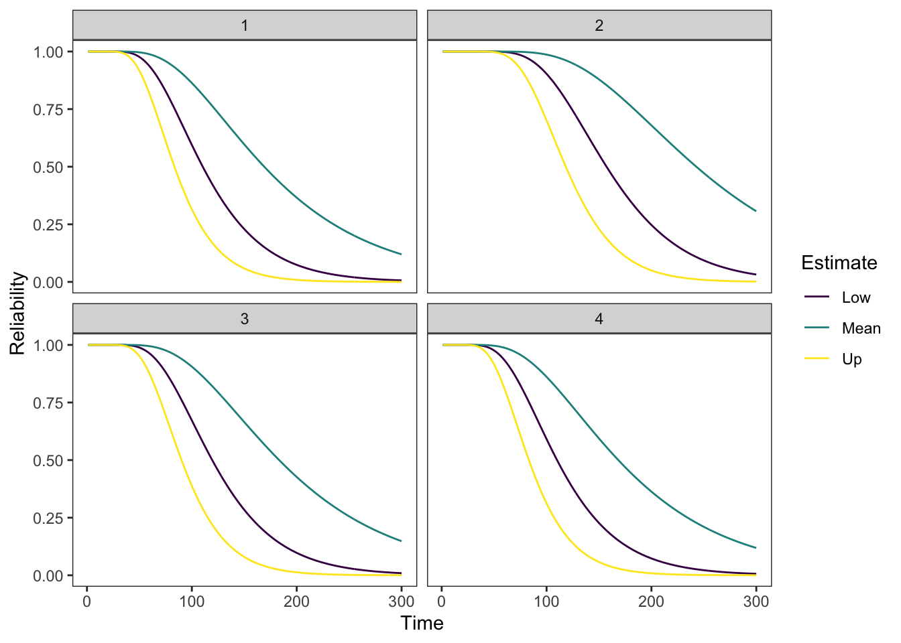
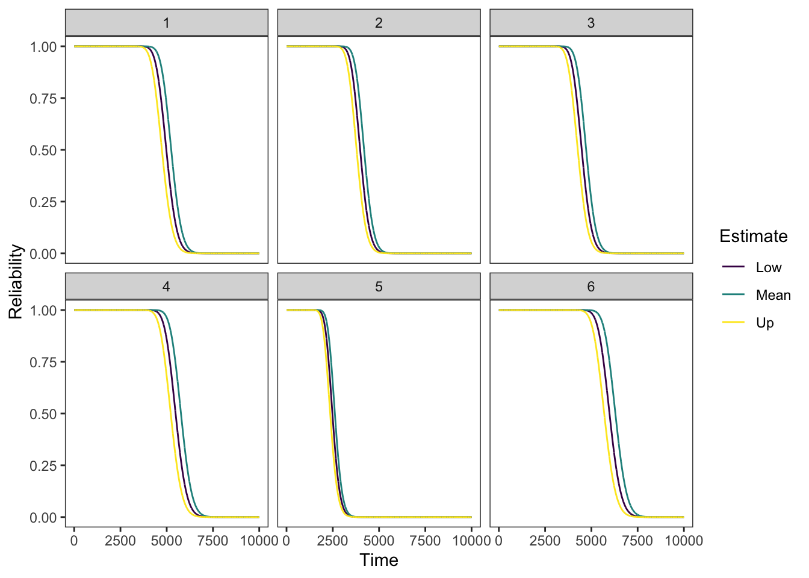
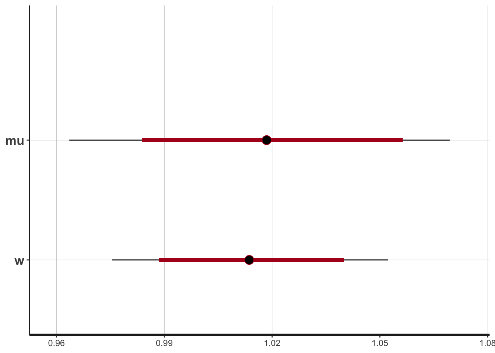
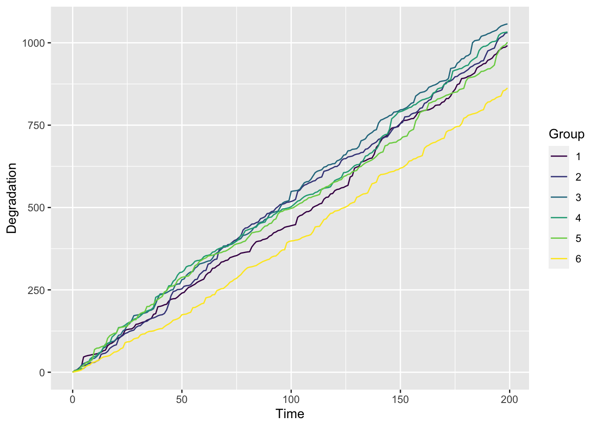

退化过程模型综述
1. 介绍
近年来，基于退化的可靠性技术在模型、方法和应用等方面得到快速发展。其中，在基于退化的可靠性模型方面，以随机过程理论为基础，根据工程需要，并考虑模型的简明性、实用性和适用性，已经提出了多种类型的模型，包括：
基于 Wiener 过程的模型
基于 Gamma 过程的模型
基于逆高斯过程的模型
在基于退化的可靠性建模方法，以数理统计理论为基础，针对模型和退化数据的类型，研究矩估计、极大似估计及 EM 算法、Bayes 估计及 MCMC算法、基于滤波的状态估计方法，以及非参数和半参数方法等，解决模型辨识和修正问题;
采用似然比检验、Bayes 因子分析等方法进行模型验证;
采用均方误差（MSE）、Akaike 信息准则(AIC)、Bayes 信息准则(BIC)、偏差信息准则(DIC)等进行模型优良性检验。
在基于退化的可靠性技术应用方面，针对机械零部件（如轴承、润滑系统）、半导体器件（如功率MOS器件）、机电部件（如感应电动机）、光电器件(如太阳电池、激光器、LED)、电子器件（如电容、蓄电池）等的退化失效过程，开展退化过程建模、可靠性评估、剩余寿命预测、可靠性试验设计：特别是加速退化试验方案设计的研究。
2. Wiener 退化过程模型
Wiener 过程由于其简单的结构和比较丰富的研究成果，成为目前退化过程建模中应用最为广泛的一种模型。Wiener 退化过程的首达时间分布具有解析形式，便于对产品寿命和可靠度的分析和计算。
Wiener 退化过程可以描述产品退化过程的时间不确定性，而且比较容易处理测量数据存在误差的情况。
通过对经典 Wiener 过程的参数引入随机性，使得 Wiener 退化过程能够描述个体差异，并且一般不会给模型参数的估计带来更多的困难。
对 Wiener 退化过程及其观测过程所构成的状态空间模型，可以采用 Kalman 滤波技术进行处理，为产品在线寿命预测、视情维修决策等提供了可行的算法和实现途径。
2.1 经典的 Wiener 过程
称 \(\{X(t), t \geqslant 0\}\) 是漂移参数为 \(\mu\) 、扩散参数为 \(\sigma\) 的 (一元) Wiener 过程, 若
\(X(0)=0\)。
\(\{X(t), t \geqslant 0\}\) 有平稳独立增量。
\(X(t)\) 服从均值为 \(\mu t\)，方差为 \(\sigma^2 t\) 的正态分布。
根据上面的定义, 可以将带漂移的 Wiener 过程表示为下面的形式: \[ X(t)=\mu t+\sigma B(t) \] 式中: \(\{B(t)\}, t \geqslant 0\) 是标准 Wiener 过程或标准布朗运动过程。
根据定义, 对带漂移的 Wiener 过程, 显然有如下的性质成立:
（1）时刻 \(t \sim t+\Delta t\) 之间的增量服从正态分布, 即 \(\Delta X=X(t+\Delta t)-X(t) \sim\) \(N\left(\mu \Delta t, \sigma^2 \Delta t\right)\) 。
（2）对任意两个不相交的时间区间 \(\left[t_1, t_2\right],\left[t_3, t_4\right], t_1<t_2 \leqslant t_3<t_4\), 增量 \(X\left(t_4\right)-X\) \(\left(t_3\right)\) 与 \(X\left(t_2\right)-X\left(t_1\right)\) 相互独立。
可靠度
如果产品的性能退化过程是一元 Wiener 过程，失效阈值为\(l\)。 则可靠度为 \[ R(t)= 1-F(t ; \mu, \sigma)=\Phi\left(\frac{l-\mu t}{\sigma \sqrt{t}}\right)-\exp \left(\frac{2 \mu l}{\sigma^2}\right) \Phi\left(\frac{-l-\mu t}{\sigma \sqrt{t}}\right) \]
剩余使用寿命
假设其运行到时刻 \(\tau\) 仍末失效, 且当前性能退化量为 \(x_\tau\left(x_\tau<l\right)\), 则产品的剩余寿命 \(T_1\) 可以表示为 \[ T_1=\inf \left\{t \mid X(t+\tau) \geqslant l, X(\tau)=x_\tau, t \geqslant 0\right\} \] 由一元 Wiener 过程的独立增量性质和齐次马尔可夫性得到 \[ \begin{aligned} T_1 &=\inf \left\{t \mid X(t+\tau)-X(\tau) \geqslant l-x_\tau, t \geqslant 0\right\} \\ &=\inf \left\{t \mid X(t) \geqslant l-x_\tau, t \geqslant 0\right\} \end{aligned} \] 可知剩余寿命 \(T_1\) 也是逆 Gaussian 分布, 其密度函数只需将寿命 \(T\) 密度函数中的失效阈值 \(l\) 替换为 \(l-x_\tau\), 即 \[f_{T_1}(t)=\frac{l-x_\tau}{\sqrt{2 \pi \sigma^2 t^3}} \exp \left[-\frac{\left(l-x_\tau-\mu t\right)^2}{2 \sigma^2 t}\right]\]
2.1.1 统计推断
假设共有 \(n\) 个样品进行性能退化试验。样品 \(i\) 初始时刻 \(t_{i 0}\) 退化量取值为 \(X_{i 0}=0\), 在 时刻 \(t_{i 1}, \cdots, t_{i m_i}\) 样品 \(i\) 退化量为 \(X_{i 1}, \cdots, X_{i m_i}\) 。记 \(\Delta X_{i j}=X_{i j}-X_{i, j-1}\) 是样品 \(i\) 在时刻 \(t_{i, j-1} \sim t_{i j}\) 之间的退化增量, \(\Delta t_{i j}=t_{i j}-t_{i j-1}, j=1,2, \cdots, m_i, i=1,2, \cdots, n\) 为各样品的测量间隔。
2.1.1.1 极大似然估计
由 Wiener 过程的性质, 容易知道 \[ \Delta X_{i j} \sim N\left(\mu \Delta t_{i j}, \sigma^2 \Delta t_{i j}\right) \]
于是由退化数据 \(X_{i j}=x_{i j}\) \(j=1,2, \cdots, m_i, i=1,2, \cdots, n\), 得到模型参数的似然函数为 \[ L\left(\mu, \sigma^2\right)=\prod_{i=1}^n \prod_{j=1}^{m_i} \frac{1}{\sqrt{2 \sigma^2 \pi \Delta t_{i j}}} \exp \left[-\frac{\left(\Delta x_{i j}-\mu \Delta t_{i j}\right)^2}{2 \sigma^2 \Delta t_{i j}}\right] \] 由式可以直接求得漂移参数 \(\mu\) 和扩散参数 \(\sigma^2\) 的极大似然估计如下: \[ \hat{\mu}=\frac{\sum_{i=1}^n X_{i m_i}}{\sum_{i=1}^n t_{i m_i}}, \hat{\sigma}^2=\frac{1}{\sum_{i=1}^n m_i}\left[\sum_{i=1}^n \sum_{j=1}^{m_i} \frac{\left(\Delta X_{i j}\right)^2}{\Delta t_{i j}}-\frac{\left(\sum_{i=1}^n X_{i m_i}\right)^2}{\sum_{i=1}^n t_{i m_i}}\right] \]
2.1.1.2 贝叶斯分析
基于前面所提的经典线性维纳过程，利用 rstan 进行贝叶斯分析。
\[ \begin{aligned} &\Delta X_{ij} = N(\mu \Delta t_{ij}, \sigma^2 \Delta t_{ij}),\\ &w = \frac{1}{\sigma^2} \sim Gam(a,b),\\ & \mu|w \sim N(d,\frac{c}{w}). \end{aligned} \]
其中，\(a = b = 1, d = 0, c =100\)。
- 数据准备
准备\(\Delta t_{ij}\) 和 \(\Delta x_{ij}\)的数据，并且标志出矩阵的维数。
- 构建模型（
wiener_linear.stan）
2.2 带随机效应情形
从性能退化过程的角度看，采用上述带漂移的 Wiener 过程模型，相当于认为同一批产品的退化过程相同，即参数心和口相同。实际也可能由于产品的原材料、生产过程等的差异，退化过程参数\(\mu\)和\(\sigma\)可能因产品个体差异而不同。为了刻画这种情景，我们给出带随机效应的 Wiener 过程模型。给出几种常用的模型：
\[ X(t)=\mu t+\sigma B(t) \]
- 模型一
假定 \(\mu\)为随机变量，并服从\(N(\mu_\beta,\sigma^2_\beta)\)，来描述个体退化速率的差异，\(\sigma\)是对所有个体相同的扩散参数。
- 模型二
文献 [5] 提出一种不同个体具有不同退化速率和扩散行为的随机效应模型，其中，认为不同单元的漂移和扩散参数都是随机变量，且服从正态-逆Gamma分布。假设
\[ \sigma^{2} \sim InvGama(\alpha, \beta), \quad \mu \mid \sigma^{2} \sim N(v, \eta \sigma^2). \]
失效时间分布和 RUL
- 模型一 [4]
\[ f_T(t)=\sqrt{\frac{l^2}{2 \pi t^3\left(\sigma_\beta^2 t+\sigma_B^2\right)}} \exp \left\{-\frac{\left(l-\mu_\beta t\right)^2}{2 t\left(\sigma_\beta^2 t+\sigma_B^2\right)}\right\}, t \geqslant 0 \] 对应的不可靠度函数为 \[ F_T(t)=\Phi\left(\frac{\mu_\beta t-l}{\sqrt{\sigma_\beta^2 t^2+\sigma_B^2 t}}\right)+\exp \left\{\frac{2 \mu_\beta l}{\sigma_\beta^2}+\frac{2 \sigma_B^2 l^2}{\sigma_B^2}\right\} \Phi\left(\frac{2 \sigma_\beta^2 l t+\sigma_B^2\left(\mu_\beta t+l\right)}{\sigma_B^2 \sqrt{\sigma_\beta^2 t^2+\sigma_B^2 t}}\right) \]
- 模型二 [4]
\[ \begin{aligned} f_T(t) & =\frac{\alpha^\beta \Gamma\left(\beta+\frac{1}{2}\right)}{\Gamma(\beta)} \frac{l}{\sqrt{2 \pi t^3(1+\eta t)}}\left[\frac{(l-v t)^2}{2 \alpha t(1+\eta t)}+\alpha\right]^{-\beta-\frac{1}{2}} \\ & =\frac{\Gamma\left(\beta+\frac{1}{2}\right)}{\Gamma(\beta)} \frac{l}{\sqrt{2 \pi \alpha t^3(1+\eta t)}}\left[\frac{(l-v t)^2}{2 \alpha t(1+\eta t)}+1\right]^{-\beta-\frac{1}{2}} \end{aligned} \]
统计推断
- 模型一
由Wiener过程的性质，知道\(\Delta X_{i j}| \mu \sim N\left(\mu \Delta t_{i j}, \sigma^2 \Delta t_{i j}\right)\)，如上面模型类似，似然函数为：
\[ \begin{aligned} l &= \sum_{i=1}^{n} \sum_{j=1}^{m_i} \log \int_{-\infty}^{\infty} f(x;\mu,\sigma) f(\mu) d \mu\\ & = \sum_{i=1}^{n} \sum_{j=1}^{m_i} \log \int_{-\infty}^{\infty}N\left(\Delta x_{i j}; \mu \Delta t_{i j}, \sigma^2 \Delta t_{i j}\right) \times N(\mu;\mu_\beta,\sigma^2_\beta) d\mu \\ \end{aligned} \]
- 模型二
对数似然函数为
\[ \begin{aligned} l &= \sum_{i=1}^{n} \sum_{j=1}^{m_i} \log \int_{-\infty}^{\infty} f(x;\mu,\sigma) f(\mu) f(\sigma) d \mu d\sigma \\ \end{aligned} \]
2.3 多应力情形
恒定应力加速Wiener退化过程考虑以下三个假设：
确定正常应力水平\(S_0\)和\(k\)个加速应力水平\(S_1,S_2,\ldots,S_r\)，且满足如下关系 \[{S_0<S}_1<S_2<\ldots<S_r.\]
在正常应力水平\(S_0\)和\(k\)个加速应力水平\(S_1,S_2,\ldots,S_r\)，产品退化量服从漂移参数为\(\mu_i\)，扩散参数为\(\sigma\)的Wiener过程。
漂移参数为\(\mu_i\)和应力水平存在以下关系：\[\ln \mu_i = a + b \varphi (S_i).\]
注： 在加速退化试验情况下进行统计推断后，可以外推正常应力水平，包括对可靠度函数、RUL等进行推断，具体表达式和经典Wiener过程相同，只是表达式中的\(\mu\)用\(\mu_0= \exp(a+b \varphi (S_0))\)代替。
2.3.1 统计推断
假设在加速应力水平\(S_i\)下有\(n_i\) 个样品进行性能退化试验。对第\(i\)个应力水平的第\(j\)个样品测量\(n_{ij}\)次，取每个样品的初始退化量为\(X_{ij0}=0\)，在时刻\(t_{ijk}\)样品相应的退化量为\(X_{ijk}\)。记 \(\Delta X_{i j k}=X_{i j k}-X_{i, j, k-1}\) 是第\(i\)个应力水平下第\(j\)个样品在时刻 \(t_{i j k} \sim t_{i j k-1}\) 之间的退化增量, \(\Delta t_{i j k}=t_{i j k }-t_{i j k-1}, i = 1,2 \cdots,r, j=1,2, \cdots, n_i, k=1,2, \cdots, n_{i j}\) 为各样品的测量间隔。
2.2.1.1 极大似然估计
由 Wiener 过程的性质, 容易知道 \[ \Delta X_{i j k} \sim N\left(\mu_i \Delta t_{i j k}, \sigma^2 \Delta t_{i j k}\right) \]
于是由退化数据 \(X_{i j k}=x_{i j k}\) \(i = 1,2 \cdots,r, j=1,2, \cdots, n_i, k=1,2, \cdots, n_{i j}\), 得到模型参数的似然函数为 \[ \begin{aligned} L\left(a,b, \sigma^2\right)&=\prod_{i=1}^r \prod_{j=1}^{n_i} \prod_{k=1}^{n_{i j}} \frac{1}{\sqrt{2 \sigma^2 \pi \Delta t_{i j k}}} \exp \left[-\frac{\left(\Delta x_{i j k}-\mu_i \Delta t_{i j k}\right)^2}{2 \sigma^2 \Delta t_{i j k}}\right]\\ &=\prod_{i=1}^r \prod_{j=1}^{n_i} \prod_{k=1}^{n_{i j}} \frac{1}{\sqrt{2 \sigma^2 \pi \Delta t_{i j k}}} \exp \left[-\frac{\left(\Delta x_{i j k}-\exp(a+b\varphi(S_i)) \Delta t_{i j k}\right)^2}{2 \sigma^2 \Delta t_{i j k}}\right] \end{aligned} \]
对应的对数似然函数为 \[ l \left(a,b, \sigma^2\right) \propto N \ln \sigma - \frac{1}{2 \sigma^2} \sum_{i=1}^r \sum_{j=1}^{n_i} \sum_{k=1}^{n_{i j}} \frac{\left(\Delta x_{i j k}-e^{a+b\varphi(S_i)} \Delta t_{i j k}\right)^2}{\Delta t_{i j k}} \]
还有一种基于加速因子的似然函数。定义\[\mu_i=\mu_0 \theta^{h_i},\]其中\(h_i = \frac{\varphi(S_0)-\varphi(S_i)}{\varphi(S_0)-\varphi(S_1)}\)。 此时，相应的对数似然函数为 \[ l \left( \mu_0 ,\theta, \sigma^2\right) \propto N \ln \sigma - \frac{1}{2 \sigma^2} \sum_{i=1}^r \sum_{j=1}^{n_i} \sum_{k=1}^{n_{i j}} \frac{\left(\Delta x_{i j k}- \mu_0 \theta^{h_i} \Delta t_{i j k}\right)^2}{\Delta t_{i j k}} \]
3. Gamma 退化过程模型
Gamma 过程描述的退化过程是严格单调非负的，并且Gamma 过程是纯跳过程，其样本路径不连续，既可描述连续的微小冲击导致的缓慢退化，也可以描述大的冲击导致的大的损伤。 当产品的退化过程是严格单调非负时, Wiener 过程不再适用。Gamma 过程具有独立非负增量,可以对该类退化过程进行建模。
3.1 经典 Gamma 退化过程模型
称连续时间随机过程 \(\{X(t), t \geqslant 0\}\) 是平稳 Gamma 过程 \({ }^{[2]}\), 若它满足以下性质:
\(X(0)=0\) 以概率 1 成立。
\(X(t)\) 具有平稳独立增量。
对任意 \(t \geqslant 0\) 和 \(\Delta t, X(t+\Delta t)-X(t) \sim G a(\alpha \Delta t, \beta)\) 。
其中 \(G a(\alpha, \beta)\) 是形状参数为 \(\alpha>0\) 、尺度参数为 \(\beta>0\) 的 Gamma 分布, 分布密度函数为 \[ f(x \mid \alpha, \beta)=\frac{1}{\Gamma(\alpha) \beta^\alpha} \alpha^{\alpha-1} \mathrm{e}^{-x / \beta} I_{(0, \infty)}(x) \] 并且 \(\{X(t), t \geqslant 0\}\) 称为形状参数为 \(\alpha>0\) 、尺度参数为 \(\beta>0\) 的平稳 Gamma 过程。
产品寿命
因为Gamma 过程的退化是单调递增的，即\(X(t) \sim Ga(\alpha t,\beta)\) ,因此产品寿命的分布可以直接通过退化量的转换获得。当给定产品退化失效阈值 \(\ell\) 时，产品寿命 \(T\) 的CDF和PDF为
\[ \begin{aligned} {F}_{{T}}(t) &={P}({T} \leqslant {t})={P}({X}({t}) \geqslant \ell) \\ &=\int_{\ell}^{\infty} \frac{1}{\Gamma(\alpha {t}) \beta^{\alpha {t}}} {x}^{\alpha {t}-1} \mathrm{e}^{-\frac{{x}}{\beta}} {dx} \\ &=\frac{1}{\Gamma(\alpha {t})} \int_{\frac{\ell}{\beta}}^{\infty} \xi^{\alpha {t}-1} \mathrm{e}^{-\xi} {d} \xi ,\\ {f}_{{T}}(t) &=\frac{{d}}{{dt}} \frac{\Gamma(\alpha {t}, 1 / \beta)}{\Gamma(\alpha {t})} \\ &=\frac{\alpha}{\Gamma(\alpha {t})} \int_0^{\nu / \beta}\left[\ln (\xi)-\frac{\Gamma^{\prime}(\alpha {t})}{\Gamma(\alpha {t})}\right] \xi^{\alpha {t}-1} \mathrm{e}^{-\xi} {d} \xi. \end{aligned} \]
由于\({f}_{{T}}({t})\) 相当复杂，因此一般用B-S分布来逼近：
\[ {F}(t ; \ell)=\Phi\left[\frac{1}{{v}}\left(\sqrt{\frac{{t}}{{u}}}-\sqrt{\frac{{u}}{{t}}}\right)\right], \quad {t}>0. \] 其中，\(\Phi(\cdot)\) 为标准正态分布，\(v=\sqrt{\frac{\beta}{\ell}}, u=\frac{\ell}{\beta \alpha}\). 相应的 PDF 为 \[ {f}(t ; \ell)=\frac{1}{2 \sqrt{2 \pi} {uv}}\left[\left(\frac{{u}}{{t}}\right)^{\frac{1}{2}}+\left(\frac{{u}}{{t}}\right)^{\frac{3}{2}}\right] \exp \left[-\frac{1}{2 {v}^2}\left(\frac{{t}}{{u}}-2+\frac{{u}}{{t}}\right)\right], {t}>0. \]
剩余寿命
根据Gamma 过程的增量独立性，可以得到剩余寿命的分布 \[ \begin{aligned} {F}(t \mid s) &={P}\left({T} \leqslant t \mid {X}(s)={x}_{s}\right) \\ &={P}\left(X(t)-X(s) \geqslant \ell-x_{s}\right) \\ &=\frac{\Gamma\left(\alpha(t-s),\left(\ell-x_{s}\right) / \beta\right)}{\Gamma(\alpha(t-s))} . \end{aligned} \] 这与将失效阈值由 \(\ell\) 变为 \(\ell-{x_s}\) 、时间 \(t\) 变为 \(t-s\) 情形的寿命分布是一样的. 因此，在给定当前状态情况下，可以按照类似的途径更新剩余寿命.
3.1.1 统计推断
假设共有 \({n}\) 个样品进行性能退化试验. 对于样品 \(i\), 初始时刻 \(t_0\) 性能退化量为 \(X_{i 0}=0\), 在时刻 \(t_1, \cdots, t_{m_i}\) 测量产品的性能退化量, 得到其测量值为 \(X_{i 1}, \cdots, X_{i m_i}\). 记 \(\Delta x_{i j}=X_{i j}-X_{i(j-1)}\) 是样品 \(i\) 在时刻 \(t_{j-1}\) 和 \(t_j\) 之间的性能退化量, 由 Gamma 过程的独立增量性得到\(\Delta X(t) \sim Ga(\alpha \Delta t_{ij},\beta)\)。
3.1.1.1 极大似然估计
由 Gamma 过程独立增量特性, 以及 \[ \Delta X_{i j} \sim G a\left(\alpha \Delta t_{i j}, \beta\right)=\frac{\left(\Delta x_{i j} / \beta\right)^{\alpha \Delta t_{i j}-1}}{\beta \Gamma\left(\alpha \Delta t_{i j}\right)} \mathrm{e}^{-\Delta x_{i j} / \beta} \] 可以获得对数似然函数为 \[ l(\alpha, \beta)=\sum_{i=1}^n\left(\sum_{j=1}^{m_i}\left(\alpha \Delta t_{i j}-1\right) \ln \Delta x_{i j}-\alpha t_{i m_i} \ln \beta-\sum_{j=1}^{m_i} \ln \Gamma\left(\alpha \Delta t_{i j}\right)-\frac{x_{i m_i}}{\beta}\right) \] 由极大似然估计原理, 令 \[ \left\{\begin{array}{l} \frac{\partial l}{\partial \alpha}=\sum_{i=1}^n \sum_{j=1}^{m_i} \Delta t_{i j}\left(\ln x_{i j}-\psi\left(\alpha \Delta t_{i j}\right)-\ln \beta\right)=0 \\ \frac{\partial l}{\partial \beta}=\sum_{i=1}^n\left(\frac{x_{i m_i}}{\beta^2}-\frac{\alpha t_{i m_i}}{\beta}\right)=0 \end{array}\right. \] 式中 \(\psi(u)\) 是 digamma 函数。 \[ \begin{aligned} &\hat{\beta}=\frac{\sum_{i=1}^n X_{i m_i}}{\alpha \sum_{i=1}^n t_{i m_i}}\\ &\sum_{i=1}^n\left[\sum_{j=1}^{m_i} \Delta t_{i j} \ln \left(\Delta x_{i j}\right)-t_{i m_i} \ln \frac{x_{i m_i}}{\alpha t_{i m_i}}-\sum_{j=1}^{m_i} \Delta t_{i j} \psi\left(\alpha \Delta t_{i j}\right)\right]=0 \end{aligned} \]
3.1.1.2 贝叶斯分析
3.2 加速 Gamma 退化过程
恒定应力加速Gamma退化过程考虑以下三个假设：
确定正常应力水平\(S_0\)和\(k\)个加速应力水平\(S_1,S_2,\ldots,S_r\)，且满足如下关系 \[{S_0<S}_1<S_2<\ldots<S_r.\]
在正常应力水平\(S_0\)和\(k\)个加速应力水平\(S_1,S_2,\ldots,S_r\)，产品退化量服从漂移参数为\(\alpha_i\)，扩散参数为\(\beta\)的Gamma过程。
漂移参数为\(\alpha_i\)和应力水平存在以下关系：\[\ln \alpha_i = a + b \varphi (S_i).\]
注： 在加速退化试验情况下进行统计推断后，可以外推正常应力水平，包括对可靠度函数、RUL等进行推断，具体表达式和经典Gamma过程相同，只是表达式中的\(\alpha\)用\(\alpha_0= \exp(a+b \varphi (S_0))\)代替。
3.2.1 统计推断
假设在加速应力水平\(S_i\)下有\(n_i\) 个样品进行性能退化试验。对第\(i\)个应力水平的第\(j\)个样品测量\(n_{ij}\)次，取每个样品的初始退化量为\(X_{ij0}=0\)，在时刻\(t_{ijk}\)样品相应的退化量为\(X_{ijk}\)。记 \(\Delta X_{i j k}=X_{i j k}-X_{i, j, k-1}\) 是第\(i\)个应力水平下第\(j\)个样品在时刻 \(t_{i j k} \sim t_{i j k-1}\) 之间的退化增量, \(\Delta t_{i j k}=t_{i j k }-t_{i j k-1}, i = 1,2 \cdots,r, j=1,2, \cdots, n_i, k=1,2, \cdots, n_{i j}\) 为各样品的测量间隔。
3.2.1.1 极大似然估计
由 Gamma 过程独立增量特性, 以及 \[ \Delta X_{i j k} \sim G a\left(\alpha_i \Delta t_{i j k}, \beta\right)=\frac{\left(\Delta x_{i j k} / \beta\right)^{\alpha_i \Delta t_{i j k}-1}}{\beta \Gamma\left(\alpha_i \Delta t_{i j k}\right)} \mathrm{e}^{-\Delta x_{i j k} / \beta} \] 可以获得对数似然函数为 \[ \begin{aligned} l(a,b, \beta)&=\sum_{i=1}^r \sum_{j=1}^n \sum_{k=1}^{n_{ i j}} \alpha_i \Delta t_{i j k} \ln \Delta x_{i j k}-\ln \beta \sum_{i=1}^r \alpha_i T_i - \sum_{i=1}^r \sum_{j=1}^n \sum_{k=1}^{n_{ i j}} \ln \Gamma \left(\alpha_i \Delta t_{i j k}\right)-\sum_{i=1}^r X_i/ \beta\\ &=\sum_{i=1}^r \sum_{j=1}^n \sum_{k=1}^{n_{ i j}} e^{a+b\varphi(S_i)} \Delta t_{i j k} \ln \Delta x_{i j k}-\ln \beta \sum_{i=1}^r e^{a+b\varphi(S_i)} T_i - \sum_{i=1}^r \sum_{j=1}^n \sum_{k=1}^{n_{ i j}} \ln \Gamma \left(e^{a+b\varphi(S_i)} \Delta t_{i j k}\right)-\sum_{i=1}^r X_i/ \beta \end{aligned}, \] 其中\(T_i=\sum_{j=1}^n \sum_{k=1}^{n_{ i j}} \Delta t_{i j k} ,X_i=\sum_{j=1}^n \sum_{k=1}^{n_{ i j}} \Delta x_{i j k}\)。
还有一种基于加速因子的似然函数。定义\[\alpha_i=\alpha_0 \theta^{h_i},\]其中\(h_i = \frac{\varphi(S_0)-\varphi(S_i)}{\varphi(S_0)-\varphi(S_1)}\)。 此时，相应的似然函数为 \[ l(\alpha_0,\theta, \beta)=\sum_{i=1}^r \sum_{j=1}^n \sum_{k=1}^{n_{ i j}} \alpha_0 \theta^{h_i} \Delta t_{i j k} \ln \Delta x_{i j k}-\ln \beta \sum_{i=1}^r \alpha_0 \theta^{h_i} T_i - \sum_{i=1}^r \sum_{j=1}^n \sum_{k=1}^{n_{ i j}} \ln \Gamma \left(\alpha_0 \theta^{h_i} \Delta t_{i j k}\right)-\sum_{i=1}^r X_i/ \beta \]
4. IG 退化过程模型
虽然 Wiener 过程和 Gamma 过程在退化建模中得到了广泛的应用，但这两种模型在实际应用中无法拟合大量退化数据。当这两个过程失败时，另一个选择是逆高斯(inverse Gaussian, IG)过程。
4.1 经典的 IG 过程
设\(X(t)\)为产品在\(t\)时刻的退化特性。假设退化路径\(X(t)\)可以用参数\(\mu\)和\(\lambda\)的IG过程来建模。此时，\(X(t)\)具有以下属性:
- \(X(0)=0\)，概率为1;
- 对于 \(t>s>u, X(t)-X(s) \geq 0, X(s)-X(u) \geq 0\), \(X(t)-X(s)\) 与 \(X(s)-X(u)\) 相互独立;
- 对于 \(t>s \geq 0\), 每个增量 \(X(t)-X(s)\) 都服从 IG 分布 \(I G\left(\mu (t-s), \lambda(t-s)^2\right)\)。
IG 分布的概率密度函数(pdf) \(I G(a, b)\)为 \[ f_{I G}(x, a, b)=\left[\frac{b}{2 \pi x^3}\right]^{1 / 2} \exp \left\{-\frac{b(x-a)^2}{2 a^2 x}\right\} \] 累计分布函数（cdf）为 \[ F_{IG}(x, a, b)=\Phi\left[\sqrt{\frac{b}{x}}\left(\frac{x}{a}-1\right)\right]+\exp \left(\frac{2 b}{a}\right) \Phi\left[-\sqrt{\frac{b}{x}}\left(\frac{x}{a}+1\right)\right], X>0 . \]
产品寿命/首达时分布
令 \(T\) 为\(X(t)\)越过临界值\(l\)的首达时。此时，我们有 \[ T=\inf \{t \mid X(t) \geq l, t>0\} . \] 对于给定的\(l\)，生命周期\(T\)具有以下 cdf
\[ \begin{aligned} F(t) &=P(T \leq t)=P(X(t)>l)=1-F_{I G}\left(l ; \mu t, \lambda t^2\right) \\ &=\Phi\left[ \sqrt{\frac{\lambda}{l}}(t - \frac{l}{\mu}) \right] - \exp\left({\frac{2 \lambda t}{\mu}}\right) \Phi\left[-\sqrt{\frac{\lambda}{l}}(\frac{l}{\mu} +t)\right] \end{aligned}\]
其中 \(\Phi(\cdot)\) 为标准正态分布的cdf。
剩余使用寿命
假设其运行到时刻 \(\tau\) 仍末失效, 且当前性能退化量为 \(x_\tau\left(x_\tau<l\right)\), 则产品的剩余寿命 \(T_1\) 可以表示为 \[ T_1=\inf \left\{t \mid X(t+\tau) \geqslant l, X(\tau)=x_\tau, t \geqslant 0\right\} \] 其密度函数只需将寿命 \(T\) 密度函数中的失效阈值 \(l\) 替换为 \(l-x_\tau\), 即
\[ \begin{aligned} F_{T_1}(t) = \Phi\left[ \sqrt{\frac{\lambda}{l-x_\tau}}(t - \frac{l}{\mu}) \right] - \exp\left({\frac{2 \lambda t}{\mu}}\right) \Phi\left[-\sqrt{\frac{\lambda}{l-x_\tau}}(\frac{l-x_\tau}{\mu} +t)\right] \end{aligned}\]
\[ \begin{aligned} f_{T_1}(t)= & \phi\left(\sqrt{\frac{\lambda}{l-x_\tau}}\left(t-\frac{l}{\mu}\right)\right) \cdot \sqrt{\frac{\lambda}{l-x_\tau}}-\frac{2 \lambda}{\mu} \exp \left(\frac{2 \lambda t}{\mu}\right) \Phi\left(-\sqrt{\frac{\lambda}{l-x_\tau}}\left(\frac{l-x_\tau}{\mu}+t\right)\right) \\ & +\exp \left(\frac{2 \lambda t}{\mu}\right) \phi\left(-\sqrt{\frac{\lambda}{l-x_\tau}}\left(\frac{l-x_\tau}{\mu}+t\right)\right) \cdot \sqrt{\frac{\lambda}{l-x_\tau}} \end{aligned} \]
4.1.1 统计推断
令\(X\left(t_{ij}\right)\)为第\(i\)个测试单元在\(t_{ij}\)时刻测量的退化特性，其中\(i=1， \ldots, n\)和\(j=\) \(1， \ldots, m_i\)。
4.1.1.1 极大似然估计
根据\(\Delta x_{ij}=X\left(t_{ij}\right)-X\left(t_{ij -1}\right)， i=1， \ldots n, j=1， \ldots, m_i\)， \((\mu, \lambda)\)的似然函数为 \[ L(\mu, \lambda)=\prod_{i=1}^n \prod_{j=1}^{m_i} f_{I G}\left(\Delta x_{i j}, \mu \Delta t_{i j}, \lambda \Delta^2 t_{i j}\right). \] 对数似然函数为： \[ \log L(\mu, \lambda) \propto \sum_{i=1}^n \sum_{j=1}^{m_i}\left(\frac{1}{2} \log (\lambda)+\log \Delta t_{i j}-\frac{3}{2} \log \left(\Delta x_{i j}\right)-\frac{\lambda\left(\Delta x_{i j}-\mu \Delta t_{i j}\right)^2}{2 \mu^2 \Delta x_{i j}}\right) \]
4.1.1.2 贝叶斯估计
4.2 加速 IG 退化过程
恒定应力加速Gamma退化过程考虑以下三个假设：
确定正常应力水平\(S_0\)和\(k\)个加速应力水平\(S_1,S_2,\ldots,S_r\)，且满足如下关系 \[{S_0<S}_1<S_2<\ldots<S_r.\]
在正常应力水平\(S_0\)和\(k\)个加速应力水平\(S_1,S_2,\ldots,S_r\)，产品退化量服从漂移参数为\(\mu_i\)，扩散参数为\(\lambda\)的Gamma过程。
漂移参数为\(\mu_i\)和应力水平存在以下关系：\[\ln \mu_i = a + b \varphi (S_i).\]
注： 在加速退化试验情况下进行统计推断后，可以外推正常应力水平，包括对可靠度函数、RUL等进行推断，具体表达式和经典Gamma过程相同，只是表达式中的\(\mu\)用\(\mu_0= \exp(a+b \varphi (S_0))\)代替。
4.2.1 统计推断
假设在加速应力水平\(S_i\)下有\(n_i\) 个样品进行性能退化试验。对第\(i\)个应力水平的第\(j\)个样品测量\(n_{ij}\)次，取每个样品的初始退化量为\(X_{ij0}=0\)，在时刻\(t_{ijk}\)样品相应的退化量为\(X_{ijk}\)。记 \(\Delta X_{i j k}=X_{i j k}-X_{i, j, k-1}\) 是第\(i\)个应力水平下第\(j\)个样品在时刻 \(t_{i j k} \sim t_{i j k-1}\) 之间的退化增量, \(\Delta t_{i j k}=t_{i j k }-t_{i j k-1}, i = 1,2 \cdots,r, j=1,2, \cdots, n_i, k=1,2, \cdots, n_{i j}\) 为各样品的测量间隔。
4.2.1.1 极大似然估计
可以获得似然函数为 \[ L(a,b, \lambda)=\prod_{i=1}^r \prod_{j=1}^{n_i} \prod_{k=1}^{n_{ij}} f_{I G}\left(\Delta x_{i j k}, \mu_i \Delta t_{i j k}, \lambda \Delta^2 t_{i j k}\right). \]
对数似然函数为： \[ \begin{aligned} \log L(a,b, \lambda) & \propto \prod_{i=1}^r \prod_{j=1}^{n_i} \prod_{k=1}^{n_{ij}} \left(\frac{1}{2} \log (\lambda)+\log \Delta t_{i j k}-\frac{3}{2} \log \left(\Delta x_{i j k}\right)-\frac{\lambda\left(\Delta x_{i j k}-\mu_i \Delta t_{i j k}\right)^2}{2 \mu_i^2 \Delta x_{i j k}}\right)\\ & \propto \prod_{i=1}^r \prod_{j=1}^{n_i} \prod_{k=1}^{n_{ij}} \left(\frac{1}{2} \log (\lambda)+\log \Delta t_{i j k}-\frac{3}{2} \log \left(\Delta x_{i j k}\right)-\frac{\lambda\left(\Delta x_{i j k}-e^{a+b\varphi(S_i)} \Delta t_{i j k}\right)^2}{2 e^{2a+2b\varphi(S_i)} \Delta x_{i j k}}\right)\\ \end{aligned} \]
还有一种基于加速因子的似然函数。定义\[\mu_i=\mu_0 \theta^{h_i},\]其中\(h_i = \frac{\varphi(S_0)-\varphi(S_i)}{\varphi(S_0)-\varphi(S_1)}\)。 此时，相应的似然函数为 \[ \log L(\mu_0, \theta, \lambda) \propto \prod_{i=1}^r \prod_{j=1}^{n_i} \prod_{k=1}^{n_{ij}} \left(\frac{1}{2} \log (\lambda)+\log \Delta t_{i j k}-\frac{3}{2} \log \left(\Delta x_{i j k}\right)-\frac{\lambda\left(\Delta x_{i j k}-\mu_0 \theta^{h_i} \Delta t_{i j k}\right)^2}{2 \mu_0^2 \theta^{2h_i} \Delta x_{i j k}}\right) \]
5. 模拟数据分析
5.1 经典维纳过程
5.2 经典 Gamma 过程
5.3 经典 IG 过程
6 案例分析
6.1 维纳过程相关
6.1.1 NASA 锂电池数据
数据来源于NASA Ames Prognostics Center of Excellence (PCoE)，但是找不到数据下载。最后是通过 Github 获得。
该数据是 NASA Ames Prognostics Center of Fxcellence (PCoF）对商用锂离子 18650 电池进行充、放电试验获得的一组蓄电池容量变化数据。试验过程中，锂离子在室温下 经历 3 种不同的运行剖面，即充电、放电和测量 EIS。
充电是以恒流模式(CC)进行，在 1.5A 电流下直到电池电压达到4.2V，然后以恒压模式(CV)继续充电直到电流降到 20mA。
放电也以恒流模式进行，放电电流为2A，直到电池电压降低到2.7V。
重复充电和放电将导致蓄电池老化。 我们直接使用充放电循环次数作为时间刻度。由于随着时间的推移，电池容量呈下降趋势。而用维纳过程来进行 RUL 预测方法是建立在退化过程有增加趋势的基础上的。为了应用该模型，对原始数据进行转换：用初始容量减去每个电池的所有容量数据。此时，失效阈值更改为初始容量减去 1.4 Ahr。
前面对数据进行了导入、处理以及可视化。接下来，使用经典的线性维纳过程对其进行建模。使用处理后的数据集，来自自己创建的R包中sdp中。
List of 2
$ data :'data.frame': 168 obs. of 5 variables:
..$ Time : int [1:168] 1 2 3 4 5 6 7 8 9 10 ...
..$ B0005: num [1:168] 0 0.0102 0.0211 0.0212 0.0218 ...
..$ B0006: num [1:168] 0 0.0102 0.022 0.0221 0.0348 ...
..$ B0007: num [1:168] 0 0.0104 0.0104 0.0103 0.0116 ...
..$ B0018: num [1:168] 0 0.0118 0.0154 0.0243 0.0223 ...
$ threshold: num [1:4] 0.456 0.635 0.491 0.455plot_path(lithium_battery[[1]]) +
# scale_color_discrete() +
theme_bw() +
theme(panel.grid = element_blank()) 
# Inference
# MLE ========
mle_fit = sta_infer(method = "MLE", process = "Wiener", type = "classical",
data = lithium_battery[[1]])
mle_fit low mean up
[1,] 0.0024 0.0038 0.0051
[2,] 0.0167 0.0176 0.0185Reliability(t = 100, threshold = lithium_battery[[2]][1],par = mle_fit,
process = "Wiener",type = "classical")[1] 0.8633334Reliability_cowplot(R_time = 1:300, sum_para = mle_fit, threshold = lithium_battery[[2]],
process = "Wiener", type = "classical")
rul2 = RUL(t = 1:100, cur_time = 30, threshold = lithium_battery[[2]][1], data = lithium_battery[[1]], par = mle_fit[,2], process = "Wiener", type = "classical")
RUL_plot(fut_time = c(10,15,20,25,30),
time_epoch = 1:300,
group = 1,
process = "Wiener",
type = "classical",
threshold = lithium_battery[[2]][1],
dat = lithium_battery[[1]],
zlim = c(0,0.01),
xlim = c(0,300),
para = mle_fit[,2],
real_RUL=c(NA,NA,NA,NA,NA,NA))
$rect
$rect$w
[1] 0.2499835
$rect$h
[1] 0.1139012
$rect$left
[1] -0.1004324
$rect$top
[1] 0.1683858
$text
$text$x
[1] -0.02995602 -0.02995602 -0.02995602
$text$y
[1] 0.13991046 0.11143515 0.082959846.1.2 激光器件 Laser 数据集
数据集来自 Meeker, W. Q. (1998). Statistical Methods for Reliability Data。
激光器件的质量特征是其工作电流。当工作电流达到预定义的阈值水平ω = 10时，该设备被认为是故障。其电流的测量频率为每250小时一次，实验在4000小时时终止。图1(a)显示了15个被测试单元的降解路径及其拟合的平均趋势。
| Value | Unit | Hours |
|---|---|---|
| 0.0000 | 101 | 0 |
| 0.4741 | 101 | 250 |
| 0.9255 | 101 | 500 |
| 2.1147 | 101 | 750 |
| 2.7168 | 101 | 1000 |
| 3.5110 | 101 | 1250 |
Laser_dat %>% ggplot(aes(Hours,Value,fill = Unit)) +
geom_line(size = 0.1) +
geom_point(size = 0.8) +
theme_bw() +
theme(panel.grid.major = element_blank()) +
# scale_color_viridis(discrete = T) +
theme(legend.position = 'none') +
labs(x = "Hours", y = "Degradation characteristic")
# Inference
# MLE ========
mle_Laser = sta_infer(method = "MLE", process = "Wiener", type = "classical", data = as.data.frame(Laser_new))
mle_Laser low mean up
[1,] 0.0019 0.0020 0.0021
[2,] 0.0116 0.0127 0.0138计算可靠度并绘图，阈值设置参考 Wang, X., et al. (2020). “Accurate reliability inference based on Wiener process with random effects for degradation data.” Reliability Engineering & System Safety 193. 第6节案例分析
[1] 0.715017Reliability_cowplot(R_time = 1:10000, sum_para = mle_Laser, threshold = c(10,8,9,11,5,12),process = "Wiener", type = "classical")
rul2 = RUL(t = 1:1000, cur_time = 30000, threshold = 10, data = as.data.frame(Laser_new), par = mle_Laser[,2], process = "Wiener", type = "classical")
# RUL_plot(fut_time = c(10,15,20,25,30),
# time_epoch = 1:1000,
# group = 1,
# process = "Wiener",
# type = "classical",
# threshold = 10,
# dat = as.data.frame(Laser_new),
# zlim = c(0,0.01),
# xlim = c(0,1000),
# para = mle_Laser[,2],
# real_RUL=c(NA,NA,NA,NA,NA,NA))6.1.3 炭膜电阻器 carbon-film resistors
退化数据来自 Meeker, W. Q. (1998). Statistical Methods for Reliability Data。（常应力下的加速退化数据）。
在某些电阻器的操作过程中，退化会导致电阻的增加。当电阻的增加百分比达到退化阈值水平时，电阻就失效了。
Zhou2022 只使用了 83 摄氏度下的测试数据。数据中有10个碳膜电阻的测试样品，在83C温度下，在相同的检测时间点452 h, 1030 h, 4341 h, 8084 h测量。10个碳膜电阻的电阻百分比递增路径如下图所示。
| Percent.Increase | Resistor.ID | DegreesC | Thousands.of.Hours |
|---|---|---|---|
| 0.28 | R1 | 83 | 0.452 |
| 0.32 | R1 | 83 | 1.030 |
| 0.38 | R1 | 83 | 4.341 |
| 0.62 | R1 | 83 | 8.084 |
| 0.22 | R2 | 83 | 0.452 |
| 0.24 | R2 | 83 | 1.030 |
library(latex2exp)
resistor_dat %>% filter(Degree == 83) %>%
ggplot(aes(Hours,Value,fill = Unit)) +
geom_line(size = 0.1) +
geom_point(size = 0.8) +
theme_bw() +
theme(panel.grid.major = element_blank()) +
# scale_color_viridis(discrete = T) +
theme(legend.position = 'none') +
labs(x = TeX(r"(Hours($10^3$))"), y = "Degradation characteristic")
后续参数估计和可靠度估计就先不做了。
类似的数据集还包括：
6.1.4 惯导平台 interial navigition 数据
数据来自于文献：Si, X. S., et al. (2012). “Remaining Useful Life Estimation Based on a Nonlinear Diffusion Degradation Process.” IEEE Transactions on Reliability 61(1): 50-67.
惯导平台是武器系统、空间设备等的惯性导航系统的关键部件，其运行状态直接影响导航精度。惯导平台中的传感器主要包括3个陀螺仪、3 个加速度计，分别用于测量角速度和线加速度。统计分析表明，惯性平台几乎70%的失效来自于陀螺漂移。
下面的例子中,安装在惯导平台中的陀螺是在驱动和传感两个轴上具有两个自由度的机械结构。当惯性平台运行时，陀螺的转子以很高的速度转动，将导致旋转轴的磨损，并最终导致陀螺漂移。随着磨损的累积,漂移也逐渐增大，最终导致陀螺的失效。因此，陀螺漂移是用于评估惯性平台健康状态的一个性能指标。
图给出的是传感轴的漂移退化测量数据，与驱动轴相比,传感轴的漂移在评价陀螺退化时占主要地位。退化试验数据包括5个试验样品，每个产品进行9次测量，试验条件与现场条件相似。

| time | Item1 | Item2 | Item3 | Item4 | Item5 |
|---|---|---|---|---|---|
| 2.5 | 0.0507 | 0.1300 | 0.0135 | 0.1052 | 0.0928 |
| 5.0 | 0.1789 | 0.2554 | 0.0309 | 0.1996 | 0.2633 |
| 7.5 | 0.2059 | 0.3153 | 0.0077 | 0.2927 | 0.3010 |
| 10.0 | 0.2548 | 0.3966 | 0.1510 | 0.3060 | 0.3515 |
| 12.5 | 0.3117 | 0.2424 | 0.1162 | 0.2860 | 0.2818 |
| 15.0 | 0.5236 | 0.3473 | 0.0237 | 0.2918 | 0.4375 |
该数据需要用非线性的漂移参数的维纳过程来刻画。暂时按下不表。
library(viridis)
interial_new = interial_dat %>%
pivot_longer(`Item1`:`Item5`,
names_to = "Product",
values_to = "Value")
interial_new %>%
ggplot(aes(time,Value)) +
geom_line(aes(col = Product)) +
geom_point(aes(col = Product,shape = Product)) +
scale_color_viridis(option = "D",discrete = T) +
scale_x_continuous(limits = c(0, 25),breaks = seq(0,25,2.5)) +
theme_bw() +
ylab("Condition monitoring time (hours)") +
xlab("Gyropic drift (/h)") +
theme(panel.grid = element_blank(),
legend.position = "right") 
6.1.5 铝合金疲劳裂纹长度 2017-T4 Aluminum Alloy
数据来自： (Si, X. S., et al. (2012). “Remaining Useful Life Estimation Based on a Nonlinear Diffusion Degradation Process.” IEEE Transactions on Reliability 61(1): 50-67).
它是飞机上常用的金属材料，这种材料的完整性通过疲劳裂纹的长度来评估。当疲劳裂纹的长度等于或大于预先设定的阈值6mm时，这种材料制成的结构被认为处于非常临界的状态，并被定义为失效。得到的数据代表了2017-T4铝合金4个试件在200 MPa应力水平下的裂纹长度扩展，模拟了实际操作条件。
对于每个项目，疲劳裂纹长度记录在增加100,000循环，直到实验结束。在测试过程中，为每个项目记录了十个裂缝级别。退化过程存在非线性。
| Cycle | Item1 | Item2 | Item3 | Item4 |
|---|---|---|---|---|
| 1.5 | 0.04 | 0.34 | 3.32 | 0.38 |
| 1.6 | 0.32 | 0.40 | 0.40 | 0.50 |
| 1.7 | 0.40 | 0.58 | 0.50 | 0.60 |
| 1.8 | 0.48 | 0.80 | 0.70 | 0.75 |
| 1.9 | 0.50 | 1.20 | 1.25 | 1.10 |
| 2.0 | 1.80 | 1.80 | 1.40 | 1.25 |
Alloy_new = Alloy_dat %>%
pivot_longer(`Item1`:`Item4`,
names_to = "Product",
values_to = "Value")
Alloy_new %>%
ggplot(aes(Cycle,Value)) +
geom_line(aes(col = Product)) +
geom_point(aes(col = Product,shape = Product)) +
scale_color_viridis(option = "D",discrete = T) +
theme_bw() +
ylab("Condition monitoring time (hours)") +
xlab("Gyropic drift (/h)") +
theme(panel.grid = element_blank(),
legend.position = "right") 
6.2 伽马过程相关
6.2.1 wear data
数据来自： Ye Z.S., et al. (2014). “Semiparametric Estimation of Gamma Processes for Deteriorating Products” Technometrics
Wear of a tire tread is a major cause of tire failures. To assess the wear behavior of a batch of tire treads from a factory, a bus park in South Korea sampled some tires installed on buses of the same version. Degradation level of each tire was measured, and its time in service (in thousands of kilometers) was retrospected.
| Unit | time | wear |
|---|---|---|
| 1 | 45.3 | 6.5 |
| 2 | 46.5 | 6.4 |
| 3 | 47.1 | 6.2 |
| 4 | 48.1 | 6.4 |
| 5 | 49.0 | 6.3 |
| 6 | 49.7 | 5.8 |

6.2.2 Crack of Titanium
A manufacturer of Titanium (Ti) Grade has the highest ultimate strength of the pure Ti Grades. It is used in many applications where high strength is required. However, under high stress and high cycle fatigue, it develops cracks that lead to failures. In order to conduct a RDT, the manufacturer machined 10 bars with 0.5” diameter and subjected them to high stress and made notches (of the same dimensions) in all the bars to accelerate the crack growth. The crack length is measured every five days and is recoded for the ten units as shown in Table 6.10. The measurements are expressed in 0.001 mm but scaled for calculation purposes. Determine the number of days when the crack threshold reaches 2mm (1500 in the measurement scale)
| Unit | time | crack_length |
|---|---|---|
| 1 | 5 | 92 |
| 1 | 10 | 218 |
| 1 | 15 | 311 |
| 1 | 20 | 410 |
| 1 | 25 | 507 |
| 1 | 30 | 605 |

6.2.3 Lithium-ion batteries
Lithium-ion batteries are widely used in many applications and consumer products including electric vehicles because of their high energy density and power capability. However, the long-term performance (capacity to provide the power) decreases with number of charge and discharge cycles. A degradation test is conducted on four battery cells with initial capacities in Ah (Ampere hours, which is defined as is the amount of energy charge in a battery that will allow one ampere of current to flow for one hour). The cells are discharged and charged, and the battery capacity is measured after the accumulation of a number of charge-discharge cycles. The battery is considered failed when its capacity is \(80 \%\) of the original capacity. Use the first 25 observations of each cell and develop a general degradation model. Then utilize the model to predict the capacities at the remaining 17 cycles and calculate the error prediction of the models. Note that the original capacity corresponds to zero cycles.
| cycles | Cell.1 | Cell.2 | Cell.3 | Cell.4 |
|---|---|---|---|---|
| 0 | 2.543 | 2.532 | 2.525 | 2.496 |
| 150 | 2.497 | 2.495 | 2.487 | 2.466 |
| 300 | 2.466 | 2.467 | 2.463 | 2.438 |
| 450 | 2.453 | 2.452 | 2.447 | 2.435 |
| 600 | 2.428 | 2.424 | 2.412 | 2.399 |
| 750 | 2.400 | 2.400 | 2.393 | 2.376 |
li_dat %>% ggplot(aes(cycles,Cell.1,Cell.2,Cell.3,Cell.4)) +
geom_line(aes(cycles,Cell.1),size = 0.1) + geom_line(aes(cycles,Cell.2),size = 0.1) +
geom_line(aes(cycles,Cell.3),size = 0.1) + geom_line(aes(cycles,Cell.4),size = 0.1) +
geom_point(size = 0.8) +
theme_bw() +
theme(panel.grid.major = element_blank()) +
scale_color_viridis(discrete = T) +
theme(legend.position = 'none') +
labs(x = "time", y = "crack length")
6.2.4 fatigue crack data
数据来自： Meeker, W. Q. (1998). Statistical Methods for Reliability Data
Fatigue Crack-Size Data gives the size of fatigue cracks as a function of number of cycles of applied stress for 21 test specimens. The data were collected to obtain information on crack growth rates for the alloy. Usually, we will refer to these data as Alloy-A and assume that a crack of size \(1.6\) inches is considered to be a failure.

| path | cycles | crack |
|---|---|---|
| 1 | 0 | 0.9 |
| 2 | 0 | 0.9 |
| 3 | 0 | 0.9 |
| 4 | 0 | 0.9 |
| 5 | 0 | 0.9 |
| 6 | 0 | 0.9 |

6.3 逆高斯过程相关
6.3.1 防辐射 Anti-radiation 数据集
数据来源：Song, B., et al. (2017). “Performance evaluation of anti-radiation based on the gamma degradation process.” Science China Technological Sciences 60(4): 501-509.
分析结果参考：Guan, Q., et al. (2019). “Reference Bayesian analysis of inverse Gaussian degradation process.” Applied Mathematical Modelling 74: 496-511.（IG + 客观贝叶斯）
数据还未下载（文中有，具体怎么做的试验，还未学习），pdf已经存在Endnote中了。
Peng, W. W., et al. (2014). “Inverse Gaussian process models for degradation analysis: A Bayesian perspective.” Reliability Engineering & System Safety 130: 175-189.（贝叶斯相关）